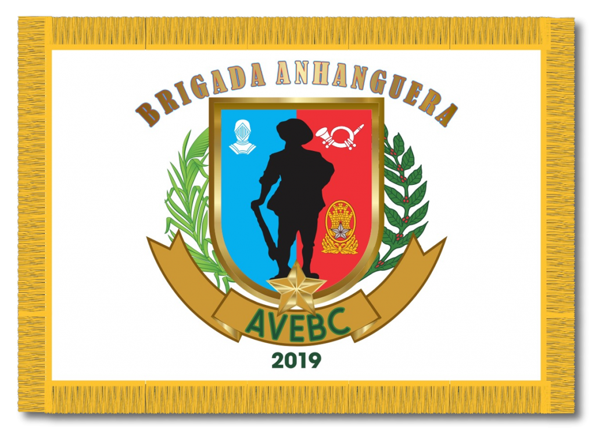

VETERANOS DA BRIGADA ANHANGUERA
A Associação dos Veteranos do Exército Brasileiro em Campinas – AVEBC é um grupamento com caráter de associação que têm por objetivo reunir os soldados, que um dia estiveram na ativa, em uma das Unidades da Corporação; para que esse Veterano possa de forma saudosa relembrar os bons momentos do Exército e manter acessa a chama do verdadeiro soldado que é Servir e Protejer a sociedade.


Uma grande história
Fundada em 27 de Abril de 2019, a Associação dos Veteranos do Exército Brasileiro em Campinas.
A AVEBC é a primeira Associação de Veteranos do Exército Brasileiro que abrange a 11º Brigada de Infantaria Leve.
A AVEBC, foi fundada pelos veteranos do 28º Batalhão de Infantaria Blindado, Veterano CB Marcelino, juntamente com o SD Geraldo e demais praças e um Oficial CAP Valdir, SGT Kleber, SGT Braghetto, CB Mateus, CB Aguinaldo, CB Satti, SD Masseran, SD Hosael, SD Oliveira, SD Vitor, SD Franklin, SD Alceu, SD Lima, SD William e SD Vlaudenir.
Notícias
Quer ingressar na carreira militar?
Veja quais os requisitos e documentações necessárias.
Clique AquiPatrocinadores
AVEBC
Associação dos Veteranos do Exército Brasileiro em Campinas
Campinas - SP